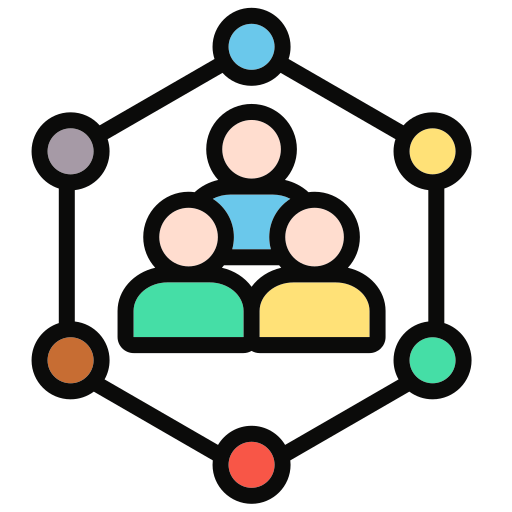
Participant là gì?
Một participant là thực thể kiểm soát một process, hoặc kiểm soát các task bên trong process đó.
Participant không nhất thiết phải là một con người. Nó có thể là:
Một người: một nhân viên cụ thể.
Một tổ chức: cả một công ty.
Một phòng ban: phòng kế toán.
Một vai trò: "người duyệt đơn", bất kể ai đang giữ vai trò đó.
Trong BPMN, participant được vẽ ra bằng hai loại element: pool và lane (hay còn gọi là swimlane). Hai loại này giúp diagram trả lời rõ câu hỏi "ai đang sở hữu task nào", và giúp cả strategic model (mô hình mang tính chiến lược, tổng quan) lẫn operational model (mô hình vận hành, chạy thật) đều dễ đọc hơn.
Pool và lane thể hiện participant thế nào?
Cùng một diagram "Roommates: Prepare a Shared Meal" - bấm vào từng tab để xem pool và lane được highlight khác nhau ra sao:
Pool cho biết ai, hay cái gì, kiểm soát toàn bộ process. Trong ví dụ này, pool được đặt tên "Roommates: Prepare a Shared Meal" - vừa nói rõ ai sở hữu process này (các bạn cùng phòng), vừa nói rõ process đó làm gì (chuẩn bị một bữa ăn chung).
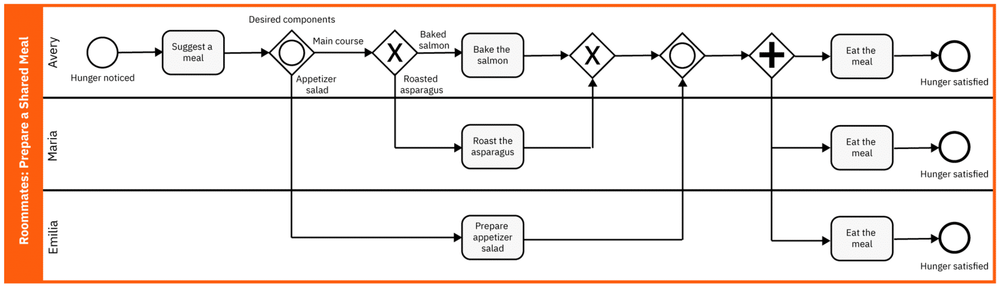
Lane cho biết ai, hay cái gì, chịu trách nhiệm cho từng task riêng lẻ bên trong process. Cũng trong ví dụ này, ba lane Avery, Maria và Emilia là ba người chịu trách nhiệm hoàn thành các task để chuẩn bị xong bữa ăn.
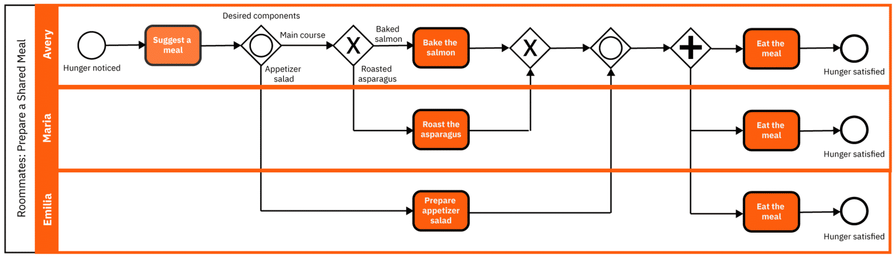
Pool là gì?
Pool đại diện cho participant kiểm soát toàn bộ process - nó điều phối luồng chạy và phân công task bên trong process đó, giống hệt cách một nhạc trưởng phân công từng đoạn nhạc cho từng nhạc công trong dàn nhạc. Vì lý do này, việc phân công task bên trong một process còn được gọi là orchestration.
Pool được tạo ra như thế nào?
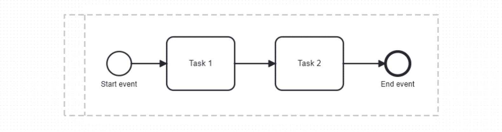
Mỗi khi bạn tạo một process diagram mới, một pool luôn được ngầm định tồn tại - dù modeler không hiện nó ra ngay từ đầu, pool đó vẫn đứng phía sau làm nền mặc định.
Một process = một pool
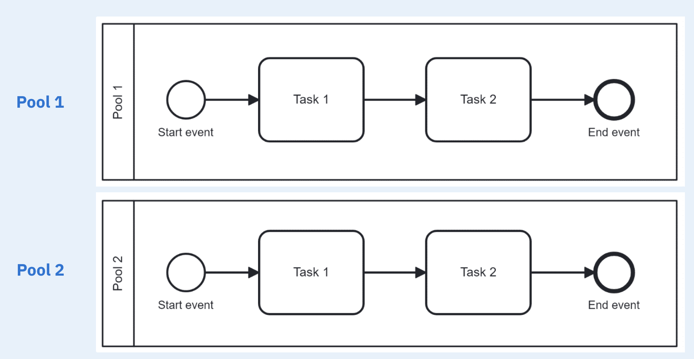
Một process luôn nằm trọn trong một pool, và sequence flow không được phép đi ra ngoài biên của pool đó. Vì vậy, nếu muốn thêm một process thứ hai vào diagram, bạn phải đặt process đó vào một pool riêng - tách biệt hoàn toàn với pool đầu tiên.
Đặt tên pool sao cho đúng
Vì một pool tương ứng với một process, tên pool nên nói rõ process đó đang làm gì, chứ không chỉ nói ai sở hữu nó.
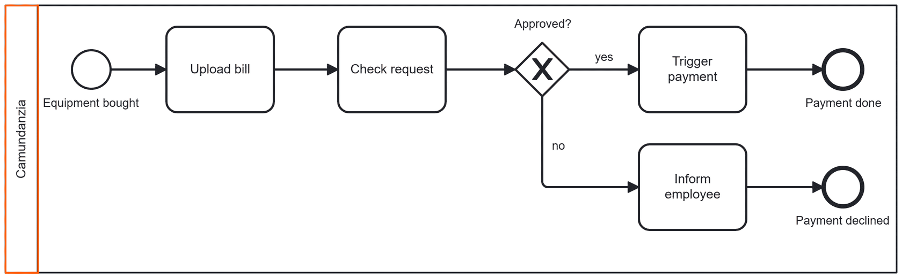
Ở ví dụ trên, pool chỉ được đặt tên "Camundanzia" - ai cũng biết ai sở hữu process, nhưng chẳng ai đoán được process này đang làm gì.
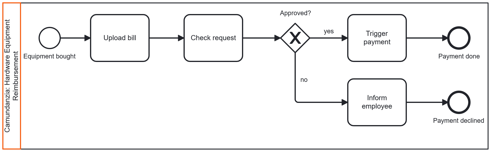
Sau khi đổi tên thành "Camundanzia: Hardware Equipment Reimbursement", mọi thứ rõ ràng hẳn: Camundanzia là participant kiểm soát process hoàn tiền thiết bị phần cứng.
Lane là gì?
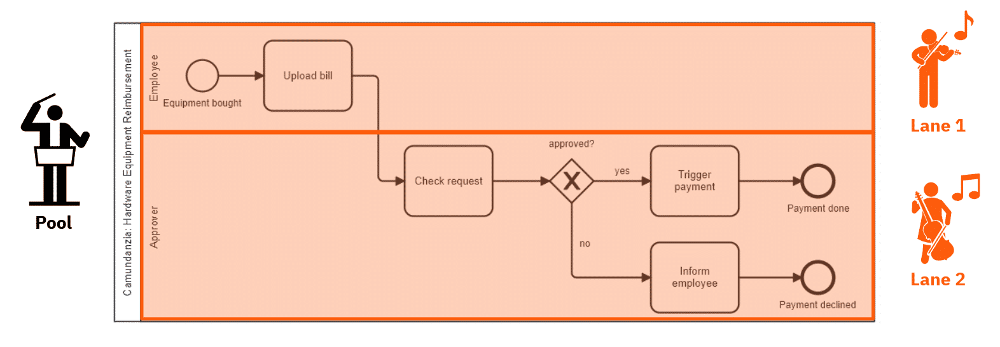
Nếu pool đóng vai trò nhạc trưởng cho cả process, thì lane giống như từng nhạc công - mỗi lane chịu trách nhiệm cho một phần riêng của bản nhạc. Ở ví dụ trên, hai lane là "Employee" và "Approver":
- Employee (lane 1): sau khi mua thiết bị, Employee chịu trách nhiệm upload hóa đơn.
- Approver (lane 2): sau khi hóa đơn được upload, Approver kiểm tra yêu cầu rồi quyết định duyệt hay không. Nếu duyệt, Approver kích hoạt thanh toán; nếu không, Approver báo lại cho Employee.
Mỗi lane định nghĩa ai, hay cái gì, chịu trách nhiệm hoàn thành các task trong process - và mỗi flow object (event, activity, gateway) chỉ được thuộc về đúng một lane.
Đặt tên lane sao cho đúng
Lane có thể được đặt tên theo vị trí/vai trò trong tổ chức, vai trò chung, phòng ban, hoặc thậm chí theo ứng dụng. Bấm vào từng mục để xem ví dụ:
1
Vị trí/vai trò trong tổ chức
Ví dụ: Business Analyst, Team Assistant, Approver.
2
Vai trò chung
Ví dụ: Employee, Customer, User.
3
Phòng ban
Ví dụ: Sales, Accounting, Technical Support.
4
Ứng dụng
Ví dụ: CRM system, ERP system, HR portal.
⚠️ Nhược điểm của lane
Lane giúp làm rõ ai sở hữu task nào, nhưng đi kèm với đó là một vài đánh đổi. Bấm vào từng mục để xem chi tiết:
🚫
Giảm khả năng đọc
Thêm nhiều lane vào một pool khiến process khó đọc hơn - đi ngược lại nguyên tắc giữ diagram dễ hiểu.
🚫
Tăng chi phí bảo trì
Lane khiến việc thay đổi process model về sau khó khăn hơn, làm tăng gánh nặng bảo trì cho process.
Thay vì dùng lane, có thể làm gì khác?
Để process vẫn dễ đọc và dễ bảo trì, đôi khi tốt nhất là tránh dùng lane hoàn toàn. Bấm vào từng mục để xem ví dụ:
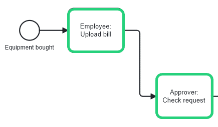
✅ Ghi role ngay trong tên task
Thay vì tách trách nhiệm bằng lane, bạn có thể ghi thẳng role hay participant chịu trách nhiệm ngay trong label của từng task - ví dụ "Employee: Upload bill". Người đọc vẫn nhận ra ai làm gì, mà diagram không phải cõng thêm độ phức tạp.
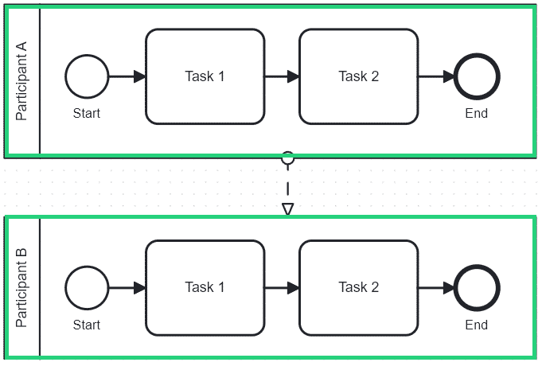
✅ Tách pool riêng + collaboration diagram
Một cách khác là mô hình hóa mỗi participant thành một pool riêng, rồi nối chúng lại bằng collaboration diagram. Cách này làm rõ ranh giới giữa các process hay tổ chức khác nhau, đặc biệt hữu ích khi việc giao tiếp giữa các process quan trọng - trong đó message flow thể hiện tương tác giữa các pool.
(*) Dùng nhiều pool riêng kèm collaboration diagram là chủ đề nằm ngoài phạm vi bài này, nhưng bạn có thể tìm hiểu thêm trong khóa BPMN Messages and Collaboration.
Vậy khi nào nên dùng lane?
Nếu vẫn muốn dùng lane, chỉ nên dùng trong:
- ✅ Strategic process model - tập trung vào trách nhiệm và ranh giới giữa chúng.
- ✅ Operational process model - tập trung vào human workflow.
Strategic vs Operational process model
Cùng một quy trình, nhưng có hai cách vẽ hoàn toàn khác mục đích: một bên để bàn bạc ý tưởng, một bên để chạy thật.
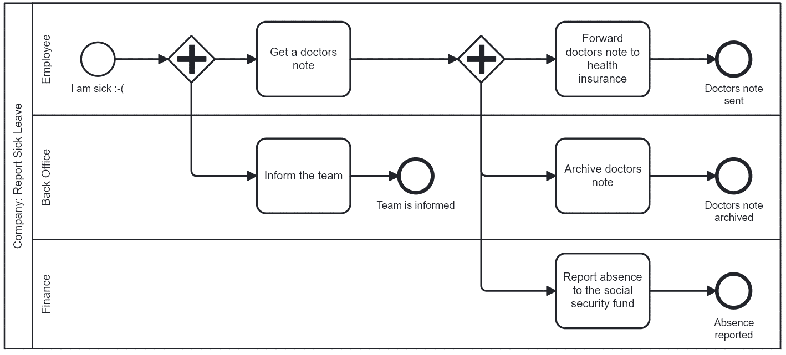
Ví dụ trên là một strategic model - "Company: Report Sick Leave". Nhìn qua là hiểu ngay: nhân viên báo ốm, xin giấy bác sĩ, rồi ba lane cùng xử lý song song. Không có task type nào được định nghĩa, cũng chẳng có exception nào được vẽ ra - đúng tinh thần "bird's eye view".
| Strategic model | Operational model | |
|---|---|---|
| Góc nhìn | Tổng quan, "bird's eye view" | Chi tiết, "worm's eye view" |
| Executable | Không | Có |
| Độ phức tạp | Đơn giản, dễ hiểu với mọi người | Có thể chi tiết và phức tạp |
| Task | Chủ yếu là undefined task | Task được định nghĩa type rõ ràng |
| Cách thể hiện participant | Thường dùng lane | Thường dùng collaboration diagram thay vì lane |
💡 Khuyến nghị chung: chỉ dùng lane trong strategic process model. Với operational model, nên ưu tiên collaboration diagram thay vì lane.
Ngược lại, một operational model đi sâu vào chi tiết vận hành thật - task đã gán type rõ ràng, và thường dùng nhiều pool nối nhau bằng collaboration diagram thay vì lane, như ví dụ xử lý invoice bên dưới:
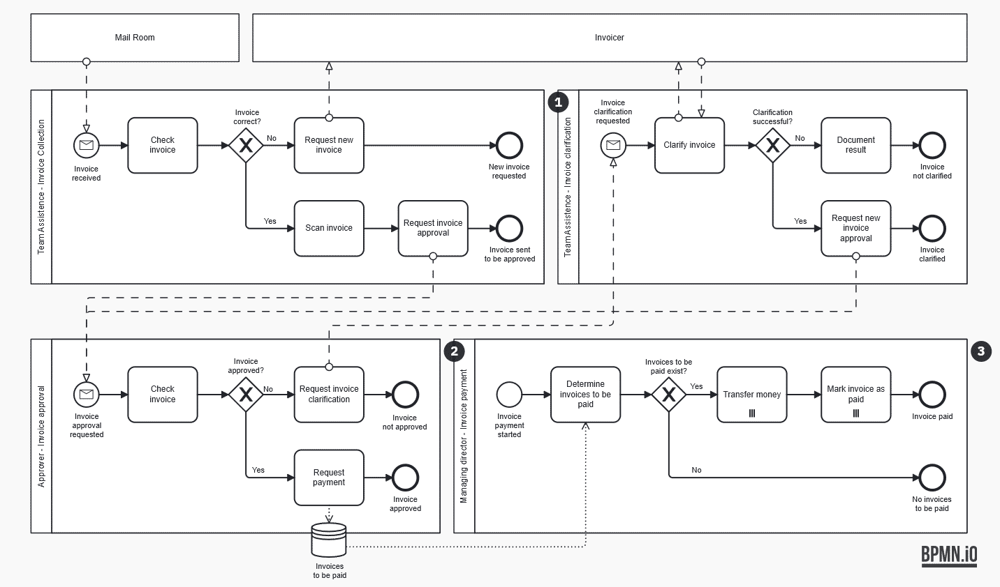
Best practice cho strategic model
Khi vẽ một strategic process model, hãy bám theo mấy nguyên tắc sau - tất cả đều được minh họa trên cùng ví dụ "Report Sick Leave" ở trên, chỉ khác nhau ở khía cạnh được nhấn mạnh. Bấm vào từng mục để xem chi tiết:
1
Giữ compact
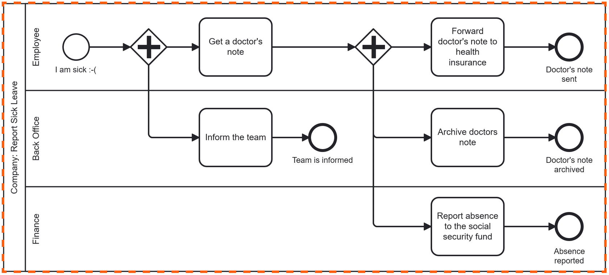
Process nên gọn trong một trang giấy, hoặc một màn hình chuẩn. Giữ mọi thứ trên một trang giúp người đọc không cần scroll, dễ hiểu hơn hẳn.
2
Chỉ dùng một pool
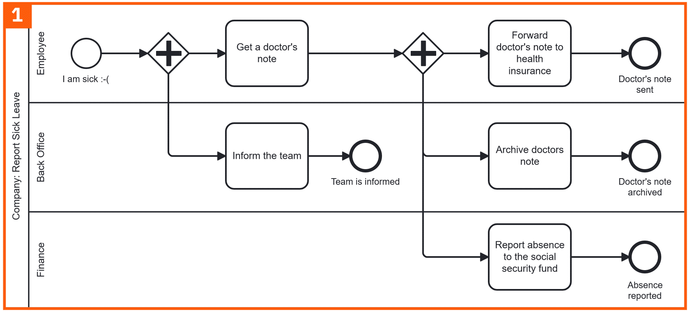
Tránh dùng nhiều pool - nhiều pool kéo theo việc phải vẽ thêm giao tiếp giữa chúng, làm rối mắt một cách không cần thiết.
3
Dùng undefined task
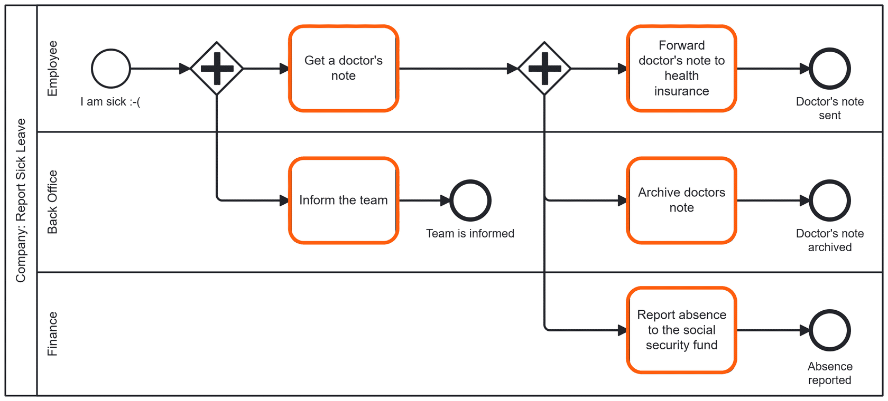
Không cần định nghĩa type cho task, vì strategic model không nhằm mục đích thực thi. Giữ task ở dạng undefined giúp diagram gọn hơn, và người chưa quen BPMN cũng dễ đọc hơn.
4
Chỉ vẽ happy path
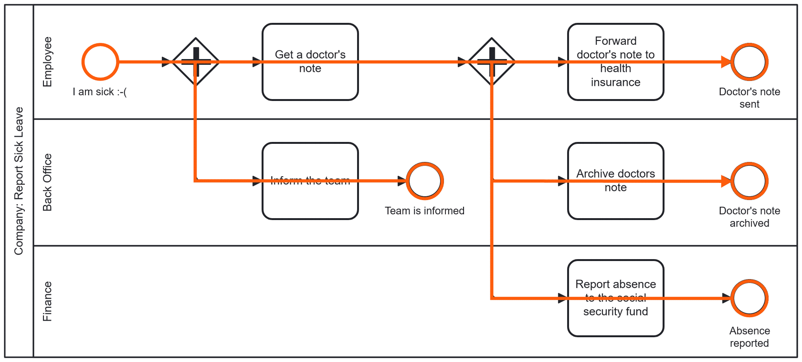
Chỉ thể hiện luồng chạy thuận lợi nhất. Đừng đưa vào các trường hợp ngoại lệ có thể xảy ra lúc thực thi.
5
Tránh đi vào chi tiết
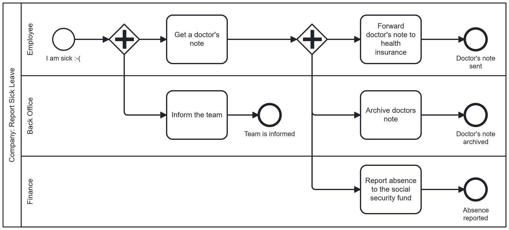
Không cần giải thích process vận hành ra sao ở mức chi tiết. Strategic model chỉ cần đủ đơn giản để ai đọc cũng hiểu process đang nói về điều gì.
Tóm tắt
- BPMN participant là một thực thể (người, team, tổ chức, hay hệ thống) kiểm soát hoặc chịu trách nhiệm cho một process, hoặc một phần của process.
- Pool và lane là hai element BPMN dùng để định nghĩa và thể hiện participant cùng trách nhiệm của họ trên diagram.
- Một pool tương ứng với một process, và đóng vai trò biên orchestration - sequence flow không thể vượt ra ngoài biên của pool.
- Lane bên trong pool giúp làm rõ ai chịu trách nhiệm cho task nào, nhưng cũng có thể khiến diagram phức tạp hơn - hữu ích nhất trong các mô hình tổng quan mang tính chiến lược, hoặc process tập trung vào human workflow.
- Strategic process model ở mức tổng quan, logic trừu tượng, và không nhằm mục đích thực thi.
- Operational process model ở mức chi tiết, logic cụ thể, và tập trung vào automation.